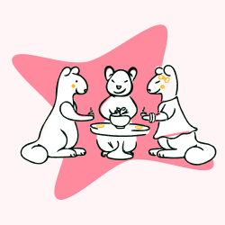
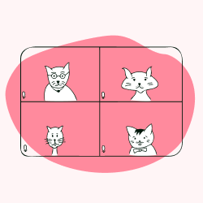
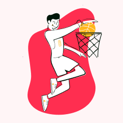
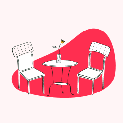
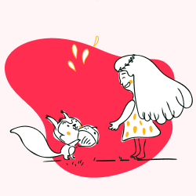
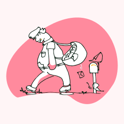

Тульский компас -
Ваш путеводитель
по идеальному выходному дню!
Отправляйтесь в увлекательное приключение с Тульским компасом - Вашим надежным партнером для организации идеального выходного дня.
Наши готовые маршруты помогут вам открыть новые места, насладиться красотой природы, попробовать вкусные блюда и создать незабываемые воспоминания.
Планируйте свой идеальный выходной с Тульским компасом!
"Лучшие воспоминания создаются во время путешествий."
Кому подходит Тульский компас?
Одному
Пара

Семья

Компания
Какие места можно посетить?

Активный отдых

Музей
Рестораны

Парки
Часто задаваемые вопросы по функционалу Тульского компаса
